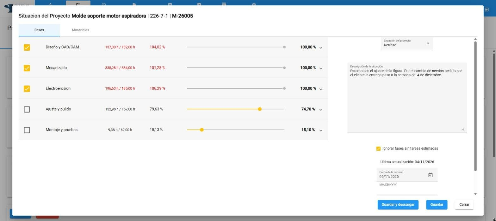

Informar al cliente de la situación
El informe de situación responde a la pregunta que más hace un cliente: «¿cómo va mi molde?». Muestra el avance por fases y materiales y la fecha de entrega acordada.

Actualizar la situación
- Abre el proyecto y, en la pestaña General, pulsa Informe de Situación.
- En la pestaña Fases verás cada fase con las horas reales frente a las estimadas y su porcentaje. Ajusta el avance de cada fase con el deslizador o desplegando sus tareas; marca la casilla de las fases terminadas.
- En Materiales revisa qué materiales están recibidos.
- A la derecha, elige la Situación del proyecto (En tiempo, Adelantado o Retraso) y escribe la Descripción de la situación, que es el texto que leerá el cliente.
- Revisa la Fecha de la revisión y la Fecha de entrega acordada. La aplicación calcula los días que faltan.
- Pulsa Guardar y descargar para obtener el PDF, o Guardar si solo quieres registrar la situación.
Qué fases y tareas aparecen
Las fases y tareas que puedes marcar no son siempre todas las de Configuración › Trabajos. La lista se prepara al abrir la ventana a partir de tres fuentes: la última situación guardada, la estimación del presupuesto y los fichajes del taller.
La primera vez que se abre
Si el proyecto aún no tiene ninguna situación guardada, aparecen todas las fases de Configuración. Las tareas de cada fase dependen del presupuesto:
| Presupuesto del proyecto | Tareas que aparecen en cada fase |
|---|---|
| Con estimación | Solo las tareas que tienen horas en la estimación. |
| Sin estimación | Todas las tareas de la fase. |
| Sin presupuesto | Ninguna: las fases aparecen vacías, con el texto «No hay tareas previstas para esta fase». |
Si hay estimación, la casilla Ignorar fases sin tareas estimadas viene marcada. Esta primera situación se guarda automáticamente al abrir la ventana.
Cada vez que se abre
Se parte de la última situación guardada y se añade lo que falte:
- Las tareas con horas en la estimación que todavía no estén en la lista.
- Las tareas en las que se ha fichado en el proyecto, aunque no estén estimadas.
Si la fase de una de esas tareas no estaba en la lista, se añade también. En resumen, una tarea aparece si ya estaba en la situación, si está estimada o si alguien ha fichado en ella.
- Las tareas no se quitan nunca: si eliminas una tarea de la estimación, sigue apareciendo en la situación.
- Mientras nadie haya fichado en el proyecto, las tareas que añadas a la estimación después de la primera situación no aparecen.
- Una fase creada en Configuración después de la primera situación solo aparece cuando alguna de sus tareas se estima o se ficha.
Fases sin tareas
Con Ignorar fases sin tareas estimadas marcado, las fases sin tareas se ven en gris y no se pueden marcar como completas ni mover su porcentaje.
En el PDF
El PDF que recibe el cliente muestra solo las fases, con su barra de avance; no detalla las tareas.
- Con Ignorar fases sin tareas estimadas marcado, incluye solo las fases que tienen alguna tarea con horas en la estimación. Una fase que aparece en pantalla solo porque se ha fichado en ella no sale en el PDF.
- Con la casilla desmarcada, incluye todas las fases de la situación.
Subtareas
Si el proyecto tiene subtareas, al desplegar una fase verás debajo de cada tarea el texto Subtareas (2/5 realizadas) y una casilla por subtarea.
- Marca las subtareas terminadas. La marca se guarda al momento, sin pulsar Guardar.
- Cuando todas las subtareas de una tarea están realizadas, la tarea se marca como completada; si desmarcas alguna, la tarea vuelve a quedar pendiente. Si con eso se completan todas las tareas de una fase, la fase pasa al 100 %.
- Las subtareas de tareas que todavía no están estimadas ni fichadas en el proyecto aparecen al final, en el bloque Otras subtareas.
Desde el taller
Los empleados con permiso pueden consultar o actualizar la situación desde el terminal de fichaje, con el botón Situación del proyecto, incluidas las casillas de las subtareas. Los permisos se dan por categoría en Configuración › Empleados.